Publications
My publications in scientific machine learning, computational physics, dynamical systems, and molecular generation. See also Google Scholar and OpenReview.
arXiv preprints
-
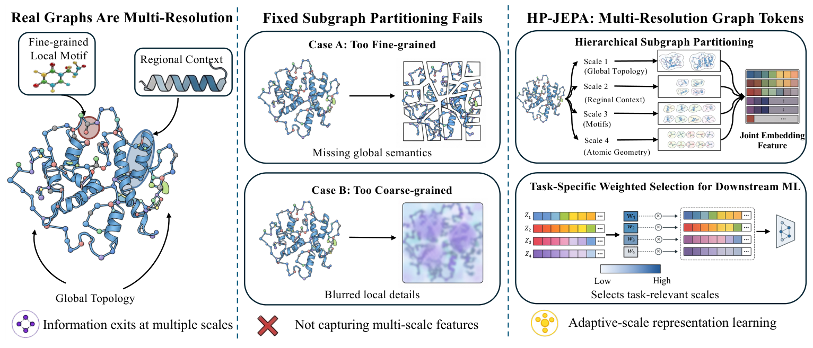
HP-JEPA: Hierarchical Partitioning for Multi-Resolution Graph Joint-Embedding Predictive Learning
arXiv:2608.00491 · 2026
Learns graph representations across multiple resolutions through hierarchical partitioning and joint-embedding prediction.
-
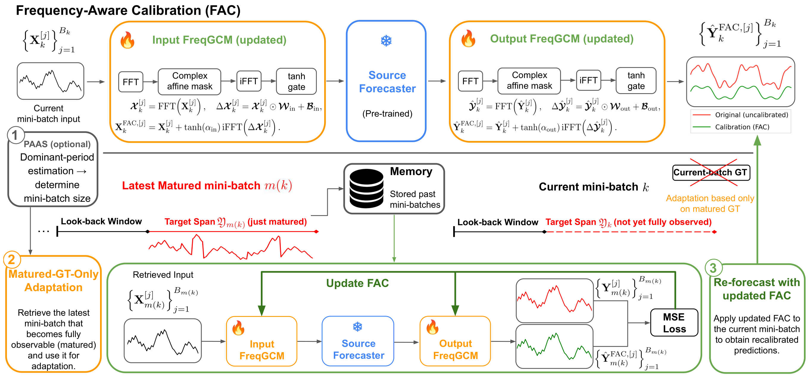
Towards Principled Test-Time Adaptation for Time Series Forecasting
arXiv:2605.17250 · 2026
Adapts time-series forecasts using frequency-domain calibration around a frozen forecasting model.
-
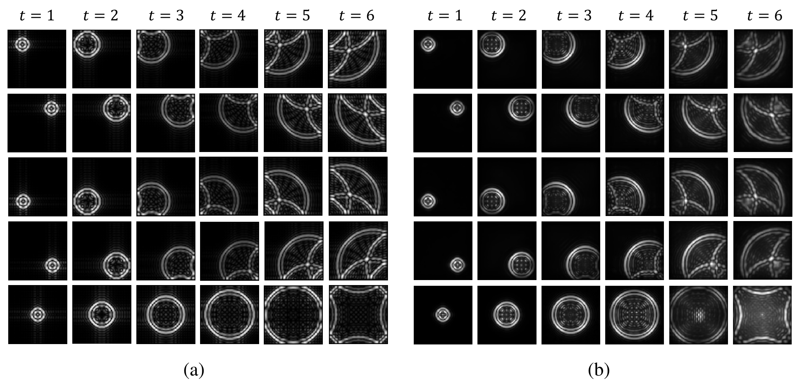
Can Data-Driven Dynamics Reveal Hidden Physics? There Is A Need for Interpretable Neural Operators
arXiv:2510.02683 · 2025
Investigates how interpretable neural operators can reveal physical dependencies learned from dynamical data.
-
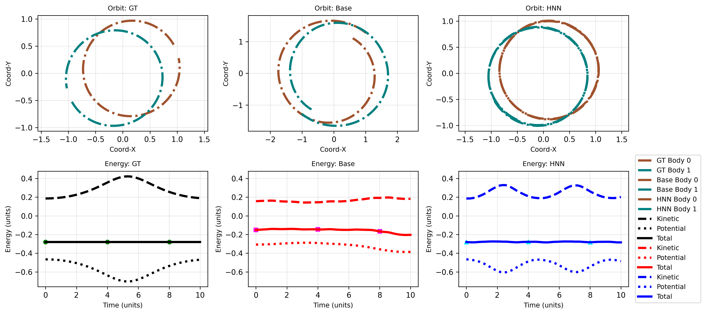
Velocity-Inferred Hamiltonian Neural Networks: Learning Energy-Conserving Dynamics from Position-Only Data
arXiv:2505.02321 · 2025
Learns energy-conserving dynamics from position-only data by estimating the velocities needed for Hamiltonian modeling.
Earlier preprint; the NYSDS 2025 proceedings paper is listed separately.
-
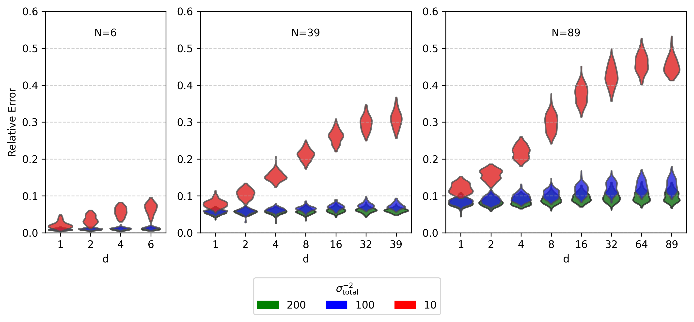
The Impact of Move Schemes on Simulated Annealing Performance
arXiv:2504.17949 · 2025
Studies how the number of coordinates updated per move affects simulated annealing performance.
Conference & proceedings papers
-
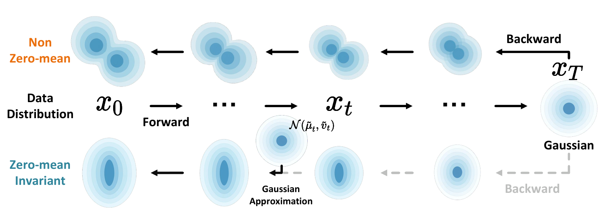
GAGA: Gaussianity-Aware Gaussian Approximation for Efficient 3D Molecular Generation
ICLR 2026
Uses Gaussianity-aware approximations to shorten diffusion sampling for efficient 3D molecular generation.
-
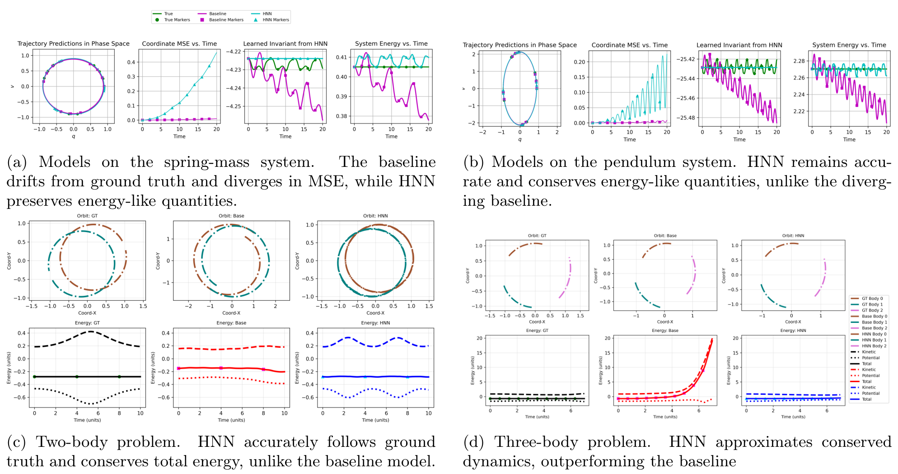
Velocity-Inferred Hamiltonian Networks: Symplectic Dynamics from Position-Only Observations
NYSDS 2025 · SIAM Proceedings
Infers velocity from position-only observations to learn Hamiltonian dynamics while preserving physical structure.
-
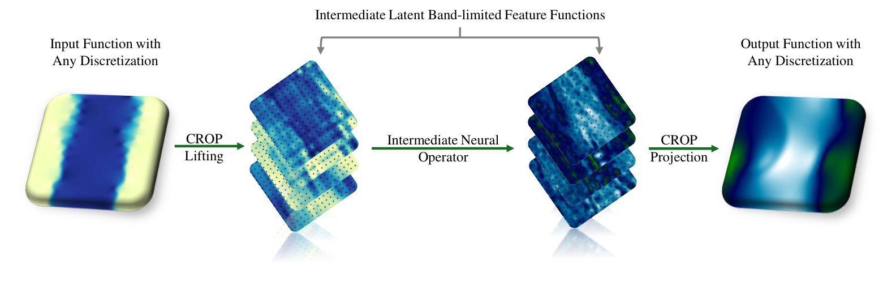
Discretization-invariance? On the Discretization Mismatch Errors in Neural Operators
ICLR 2025
Studies errors caused by changing discretization in neural operators and develops a band-limited latent representation.
-
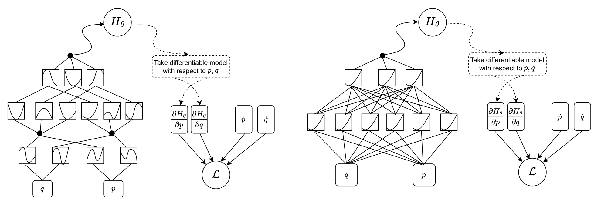
Kolmogorov–Arnold Representation for Symplectic Learning: Advancing Hamiltonian Neural Networks
IJCNN 2025
Combines Kolmogorov–Arnold representations with Hamiltonian neural networks to learn energy-based dynamical models.
-
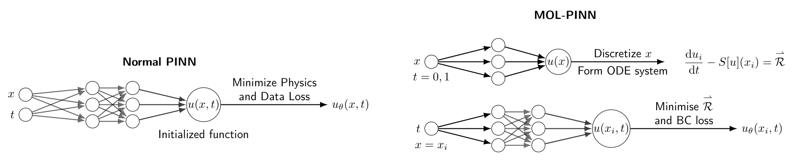
Boundary-Informed Method of Lines for Physics-Informed Neural Networks
NYSDS 2025 · SIAM Proceedings
Combines spatial discretization with a temporal neural network to solve PDEs using boundary-informed physics losses.
-
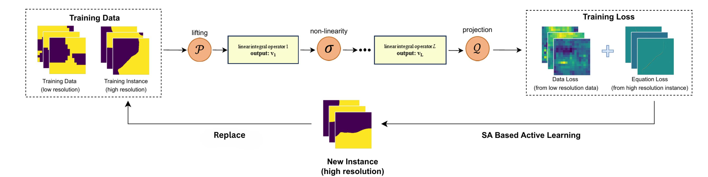
Physics-Informed Active Learning via Functional Simulated Annealing for Neural Operator
NYSDS 2025 · SIAM Proceedings
Uses physics-informed simulated annealing to select informative training examples for neural operators.
Illustration from the author poster.
Journal articles
-
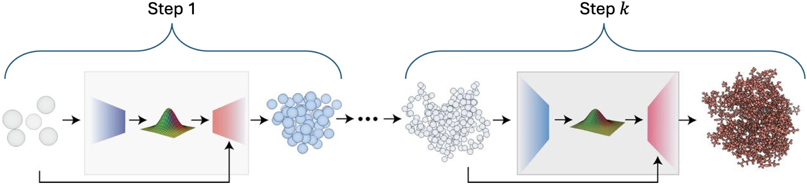
Multistep Generative Backmapping of Coarse-Grained Structures
Computer Physics Communications · 327, 110286 · 2026
Restores atomistic detail from coarse-grained structures through a sequence of intermediate generative models.
-
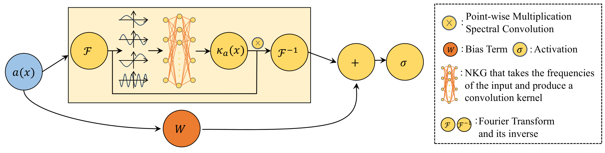
Dynamic Schwartz–Fourier Neural Operator for Enhanced Expressive Power
Transactions on Machine Learning Research · 2025
Introduces input-dependent Fourier kernels to increase the expressive power of neural operators.
-
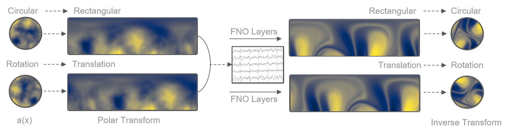
Coordinate Transform Fourier Neural Operators for Symmetries in Physical Modeling
Transactions on Machine Learning Research · 2024
Uses coordinate transformations to incorporate physical symmetries into Fourier neural operators.
Workshop papers
-
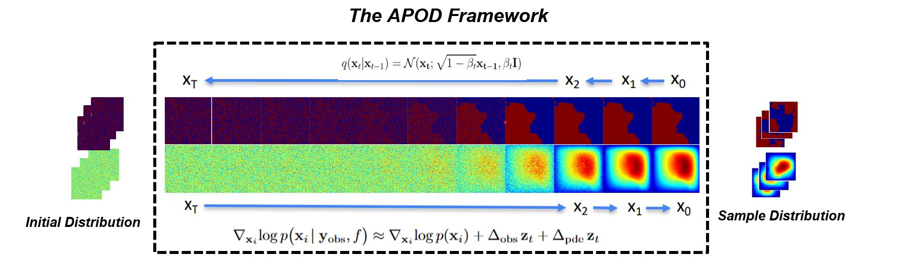
APOD: Adaptive PDE-Observation Diffusion for Physics-Constrained Sampling
ICML 2025 Workshop on Assessing World Models · Poster
Guides diffusion sampling with observations and PDE constraints to recover physically consistent fields.
-
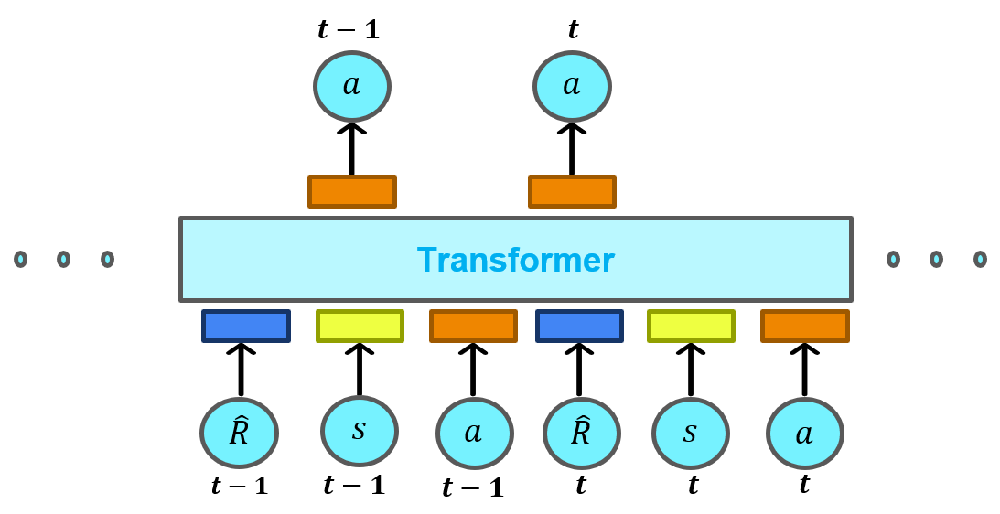
RL-QESA: Reinforcement-Learning Quasi-Equilibrium Simulated Annealing
2nd AI for Math Workshop at ICML 2025 · Poster
Learns adaptive cooling policies with reinforcement learning to guide quasi-equilibrium simulated annealing.
-
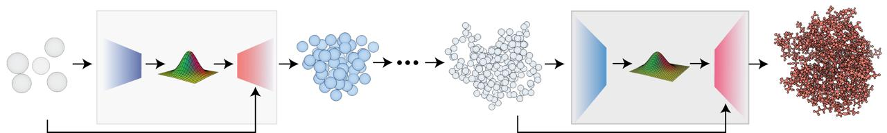
An Iterative Framework for Generative Backmapping of Coarse-Grained Proteins
ICML 2025 GenBio Workshop · Poster
Reconstructs atomistic protein structures from coarse-grained representations through successive generative refinement steps.
Submitted manuscripts
Unpublished work, listed separately from accepted and published papers.
-
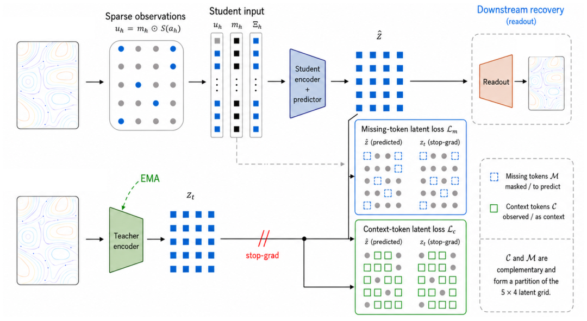
JENO: Full-Field Latent Prediction for Sparse Inverse PDE Inference
Manuscript · NeurIPS 2026 submission
Uses student–teacher latent prediction to reconstruct PDE fields from sparse observations.
Submission access may require an OpenReview sign-in.